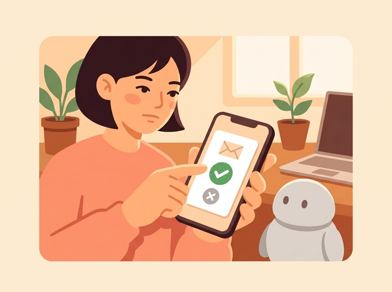
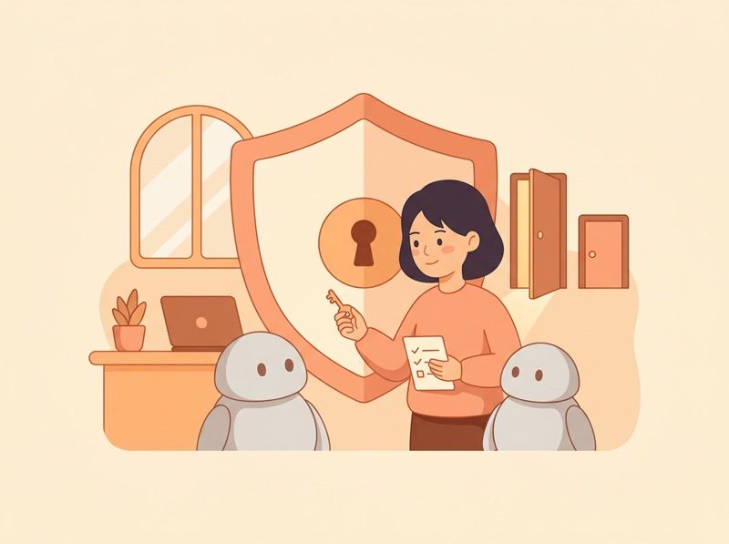

📱 スマホで開く
教室の画面を見ながら、自分のスマートフォンで、このページを開けます。スマートフォンのカメラで、このQRコードを読み取ってください。QRコードを押すと、大きく表示されます。今日の体験（2限前半、任意）は、スマートフォンのアプリでもできます。
この回のゴール
- Museが「何をするAI」かを、図で説明できる（専用のクラウドPC・目標・アプリを閉じても動く）
- 日本で使える範囲・料金・条件を、公式で確かめた分と確かめられていない分に分けて言える
- 頼み方・目標・リマインダー・アーティファクト・スキルの使い方を、3つ以上、説明できる
- 承認・権限・止め方・データの消し方と、注意点を言え、自分のルールを書ける
授業の流れ
2コマ連続（90分 + 90分 = 計180分）。途中休憩あり。
Museってなに？ 何ができて、日本で使えて、どう始めるのか
① 答えるAIから、代わりに動くAIへ（約10分）
答えるAI から、代わりに動くAI へ
- 裏で進むアプリを閉じても、Museは目標に向かって作業を続ける（絵の例）
- Meta公式の説明: "Muse is a personal AI agent. It doesn’t just answer questions, it actually does the work."（質問に答えるだけでなく、実際に作業をする）
- 公式ブログ: "Muse has its own computer, with a file system and a terminal"（Museは、ファイルとターミナルを持つ、自分のコンピューターを持つ）。専用のクラウドPC（Muse Secure VM）の中で動くので、アプリを閉じても作業が続く
- Museは基本的な機能を無料で始められる（日本でも。使用量に上限あり）。だから、今日はMuseに絞って、使い方と注意点を、公式の説明で確かめる
Museにできること（公式の説明から）
② 日本で使えるのか？ 料金は？（約10分）
日本で使える範囲（公式で確かめた分）
料金プラン（Meta公式ヘルプ）
- 日本語の公式発表: 「Museは日本において本日より iOS、Android、および muse.ai で提供を開始します。多くの基本的な機能は無料で利用でき、さらに活用したい方向けにはサブスクリプションプランもご用意しています。」（2026-10-23）
- 18歳未満は、Museを利用できません（Muse利用規約の補足条項。年齢は技術的な方法で推定され、必要ならクレジットカードの認証も使うとある）。規約は「居住する国・地域で求められている年齢が18歳を超える場合は、その年齢」とも書いている。日本では、本校の学生は全員18歳以上
- Meta公式の規約: 無料提供は、予告なく変更・中止されることがある、とある。今日の「無料」は、いまの条件です
ほかのサービスは？（dots・Grok Bot・Tasks in Gemini・Autopilot・Claude Duet）の比較表
2026-11-18に確認した、ほかの常時稼働型エージェントです（Museは、上で説明したので省きました）。「公式で確認できず」は、使えないという意味ではありません。
| サービス | 公式に書いてあること | 日本 |
|---|---|---|
| dots（OpenAI） | ChatGPTの中の常時稼働エージェント。自分専用のクラウドPC。自分のPCへの接続は、初期設定ではオフ。いつでも一時停止できる | 対象は、18歳以上のProなど。EEA・スイス・英国は除く。日本は公式で確認できず（未確認） |
| Grok Bot（xAI） | Botごとに自分のコンピューター。24時間動く（8月11日にbetaで開始。公式ページには現在「beta外」とある）。承認が要るときだけ人に戻る。Botどうしがやりとりする。作業を見せると、手順を覚える | SuperGrokやCursorのプランに含まれる。日本は公式で確認できず（未確認） |
| Tasks in Gemini（Google。以前の名前は Gemini Spark） | 背景で複数の手順を進める。決めた時刻に実行できる。公式ヘルプが「機密情報をタスクに直接入れない」と注意している | 2026-11-17から日本でも無料。現時点では、個人のGoogleアカウントのみ。学校・職場のアカウントは不可（公式ヘルプの "For now"） |
| Autopilot（Microsoft） | 自分の身元・記憶・作業場所・遠隔のコンピューターを持つ。クラウドで動く | Frontierプログラムに登録した、条件を満たす顧客に、11月17日から順次（Copilotのライセンスなどが条件）。個人向けとは書かれていない |
| Claude Duet（Anthropic） | 専用の仮想マシンとブラウザを持ち、PCやスマホが閉じていても動く。「実行する前に確認する」と書いてある | 研究プレビュー。待機リストで、米国のPro・Max・Ultraから。日本のことは書かれていない（米国から） |
- Getting started with your dot（OpenAI Help Center） — dots
- Introducing Grok Bot（xAI公式）・Grok Bot is now included with more plans（xAI公式） — Grok Bot
- Manage your tasks & workflows in Gemini Apps（Gemini Apps Help）・Gemini Apps’ release updates & improvements（Gemini Apps Help） — Tasks in Gemini
- Autopilot: meet your trusted personal teammate（Microsoft Tech Community） — Autopilot
- Introducing Claude Duet（Claude公式） — Claude Duet
③ はじめ方（約10分）
はじめ方：4つのステップ
- 公式ヘルプ: Metaアカウントで入る。持っていなければ、FacebookかInstagramのアカウント、またはメールアドレス／電話番号で作れる
- muse.ai のログイン画面にも、「携帯電話番号またはメールアドレス（必須）」とある。Metaのヘルプには、電話番号やメールを、ログインの支援・アカウントのお知らせ・安全のために使う、と書いてある
- 入れたくない人は、体験しなくてよい（体験は任意）
④ Museの画面の地図（約10分）
Museの画面の地図（公式ヘルプより）
- アシスタントのアイコンをタップすると、活動ログ（Museがしたこと、あなたが許可したこと）と、今後の予定（日時指定のタスク・リマインダー）が見られる（公式ヘルプ）
- 名前・性格は、自分で変えられる（「もっとカジュアルに」「短く」と頼むだけ）。公式ブログは、自分だけの名前をつけることを、人が気に入る機能の1つとしている
- アバターの一部の機能は、日本では「別途案内」（Meta日本語発表）。アシスタントのアイコンの場所や見え方が、日本のアカウントで違う可能性があるので、実際の画面で確かめて記録する（日本のアカウントでの実画面は、未確認）
便利な使い方：頼み方・目標・リマインダー・資料づくり・スキル
① 頼み方の6つのコツ（約10分）
頼み方の6つのコツ（公式ヘルプの「アドバイス」）
悪い例: 「ニュースを教えて」
良い例: 「毎朝、進級制作の分野（例: 地図、天気）のニュースを、3件だけ、
1行ずつ、出典URLつきで教えて。メールや予定表は見ないで。」
② 長く動かす：目標・リマインダー・サイドチャット（約10分）
長く動かす：目標からお知らせまで
- 目標: 長く追うことを伝えると、Museが計画に分け、[目標]タブで、進み具合を見られる（削除もそこから）
- リマインダー: 「何を、いつ」教えてほしいかを伝える。確認は、アシスタント → [今後]。公式は「予定された時刻に…送信するよう試みます」と書いている（必ず届くとは書いていません）
- サイドチャット: 話題ごとに、別のスレッドを作れる。メインのチャットを散らかさない
③ 資料をつくらせる：アーティファクト（約10分）
資料づくり：アーティファクト
- 例（公式ヘルプ）:「日本への旅行の日程を1ページにまとめて」「毎月の出費をトラッキングするダッシュボードを作成して」。PDFか、Wordかなど、形式も書く
- 会話のファイルを覚えているので、「予算のスプレッドシートを更新して」と、再アップロードなしで頼める
- 公式ヘルプは「Museはローカルでファイルの内容を処理します」とあるが、MuseはMetaのクラウド上の専用PC（仮想マシン）で動き、そこに、共有した情報や一緒に作ったものを保存する（プライバシーのヘルプ）。アップロードしたファイルは、Museのクラウド環境に置かれるものと考えて、入れてよいものだけ入れる。利用者が共有をオンにするか、共有リクエストを承認しない限り、外部の他者には共有されない（公式ヘルプ）
④ スキルとアイデアタブ・使い方レシピ（約20分）
便利な使い方：公式の例から
- スキル: ポッドキャスト、画像、調査のまとめ、文書の下書き、ダッシュボード、ウェブ閲覧など、Museに組み込まれた機能。別にインストールは不要で、頼むと自動で選ばれる。使われたスキルは、活動ログで見られる
- 何ができるか分からないときは: ①[アイデア]タブを見る ②「Muse、どんなことができる？」と聞く ③ダイジェスト・ポッドキャスト・画像・PDF・調査を試す（公式ヘルプ）
- 位置情報・ファイルなど、スキルによっては、情報へのアクセスが必要になる（例: 位置情報で「次に店で…」とリマインド）。必要なものだけ許可する
例1（授業用）: 毎朝、進級制作の分野のニュースを3件、1行ずつ、出典URLつきで教えて。
メールや予定表にはつながないで。
例2（授業用）: 次の公開資料を、初心者向けに1ページへ要約して。分からない言葉には、
やさしい説明をつけて。
例3（授業用）: 出費を記録する簡単なダッシュボードを、サンプルの数字で作って。
実際の金額は入れないで。
安全な設定と、小さなタスクの体験（体験は任意）
① 先に決める3つのルール（約5分）。体験する人も、しない人も、同じです。
- 個人のアカウントだけ。学校のアカウントやメールは使わない
- メール・予定表・写真・支払いは、つながない（コネクターは、今日は0個）。有料プランに入らない
- 18歳以上。電話番号やメールを入れたくない人は、体験しなくてよい
② 最初に見る設定（約10分）
最初に見る設定：3か所
- [設定] → [アクセス許可]: コネクターと、ウェブアクセスのデフォルトを、「常に確認」にする（授業用の方針）。「Ask for some actions」だと、書き込みと重要な読み取りの前に確認される
- [設定] → [データコントロール]: 「AIモデルの改善にご協力ください」は、最初はオン。オフにすると、過去のやりとりにも適用される。オンでも、名前・メール・電話番号などの個人情報は削除され、アカウントとの関連付けは解除される、と公式は書いている。自分で決める
③ A: 体験する人（約25分）。個人情報なしの小さなタスクを、1つ頼む。
例: 毎朝、進級制作の分野（例: 地図、天気、ゲーム）のニュースを、3件だけ、
1行ずつ、出典URLつきで教えて。メールや予定表には、つながないで。
確認が要るときは、先に聞いて。
- 観察して、記録する: ①頼んだ文 ②Museが確認してきたこと ③承認画面の選択肢（下の図） ④活動ログと今後の予定の場所 ⑤止める方法 ⑥公式の説明と違ったこと
- 画面に、名前・電話番号・メールアドレスが出たら、撮影・共有しない
- 手が止まったら、手を挙げる。うまくいかなくても、それも記録になります
③ B: 体験しない人（約25分）。先生の画面（または、体験している人の画面）を見ながら、自分のAIエージェント（Claude Code／Codex CLI／Antigravity CLI）に、同じタスクの仕様を書かせる（実行はしない）。第8回の型②を使う。
毎朝、決まった時刻に、公開されているニュースを3件だけ要約して届けるタスクの 「仕様」を書いてください。まだ作らないでください。 ・目的 ・入力 ・出力 ・実行する時刻 ・人に確認する場面 ・止める方法 ・間違えたとき困らないための工夫 最初に、私に質問があれば、選択肢で聞いてください。
④ 承認の画面を見る（約10分）。承認の前に、何をするのかを読みます。
承認の5つの選択肢（範囲のちがい）

承認は、自分で決めるメール送信や購入の前に、内容を見て、許可か却下かを選ぶ
- 公式ヘルプ: 承認の前に、[タスクの詳細を見る]で、タスクの詳細を確認できる
- 公式ブログ: "the default allows for standard browsing of the web and stops for anything hard to undo"（既定では、ふつうのウェブ閲覧はできるが、元に戻しにくいことの前で止まる）。確認ばかりで、全部を許可してしまう「バナー盲目」を避ける設計、とも書いている
- Museの設計は、実行する側と、許可する側を分ける（Sentinel。下の図）。ただし、許可を押すのは、人
Museの設計：作業する側と、許可する側
- Meta公式ブログの原文: "Sentinel is the sole permission authority for connector actions and network egress."／"Muse proposes actions, but only Sentinel can grant permission to perform action."
見る・止める・消す：注意点を、自分のルールにする
① 見る・止める・切る・忘れさせる・消す（約10分）
見る・止める・切る・忘れさせる・消す

何を開けるかは、自分で決めるつなぐもの・許すものは、必要な分だけにする
- 止める: ブラウザーを使っているとき、[ブラウザーをコントロール]で一時停止、[タスクを停止]で終了（公式ヘルプ）
- 切る: 接続を解除すると、データ交換は止まる。ただし、それまでに使った情報は、記憶や会話履歴に残っている可能性がある（公式）
- 忘れさせる: 「〇〇を忘れて」。「可能な限り削除」する、と公式は書いている（完全とは書いていません）
- 消す: チャット・サイドチャット・ファイルは個別に削除できる。リセットは、すべてを完全に削除し、元に戻せない
② 注意点のまとめ（約10分）。全部、公式の説明にあることです。
注意の5つの基本
| 注意 | 公式に書いてあること（要約） | 授業では |
|---|---|---|
| 責任は自分 | 完璧な自動システムは存在しない。承認する責任は、あなたにある | 承認を、ゆっくり読む |
| 間違える | Museは間違えたり、予期せぬ行動をとったりすることがある | リスクの少ないタスクから |
| 元に戻せない | メール送信などは、元に戻せない。リセットも元に戻せない | 送る前・消す前に、確認 |
| 購入 | 承認なしでは、購入やお金の移動はしない。承認の前に、購入内容と店の規約を確認 | 授業では、購入しない |
| 「常に許可」 | 今後、同じ種類の操作が、確認なしで動く | 授業では、選ばない |
| AI改善への利用 | 最初はオン。個人情報は削除される、とあるが、設定は自分で決める | 授業前に、自分で決める |
| 他の人の情報 | 保存される情報には、「あなたや他の人に関する情報」も含まれる | 友だち・家族・名簿は入れない |
| コネクター | 解除しても、使った情報は残ることがある。自作のコネクターは、Metaが確認しない | 授業では、つながない |
| 悪い指示 | ウェブ・メール・ファイルに、AIを操る指示が混ざることがある（プロンプトインジェクション） | 知らない資料を、読ませない |
| にせのMuse | にせのサイトやアプリ、パスワードを聞くリンクに注意 | 公式の入口だけ |
| Chrome拡張 | Museの動きが、Googleのアカウントや閲覧履歴に表示され、広告やおすすめに影響することがある | 授業では、使わない |
| 年齢・無料 | 18歳以上。無料は、予告なく変更・中止されることがある | いまの条件、と考える |
| 日本で未確認 | 音声・アバター・独自メールは別途案内。Mac・WhatsApp・円の料金・日本の有料は、確認できず | 公式を、自分で確かめる |
- 「授業では」の列は、この授業の方針で、公式の指示ではありません。自分で使うときは、自分で決めます
③ 自分のMuse利用ルールを書く（約10分）。第8回の型①（先に質問させる）で、自分がMuseを使うなら（または使わないなら）の5項目を作る。
自分のMuse利用ルール：5項目
私がMuseを使うとしたら、利用ルールを作りたいです。まだ、何も設定しないでください。 次の5項目を、順番に、私に質問して決めてください。 質問は、1回に1つ。選択肢で聞いてください。 1. 目標 2. 任せる仕事 3. 承認が要る操作 4. 渡す権限 5. 止める条件 最後に、私が決めたことだけを、表にしてください。 私が決めていないことは、「未定」と書いてください。
- 書いたあと、3（承認が要る操作）と4（渡す権限）を、自分の目で読む。AIが決めたことが、混ざっていないか
- 隣の人に、3つの質問をしてもらう: ①これを渡して、いちばん困るのは何か ②止める条件は、見ていないときも効くか ③「戻せない」操作は、どれか
今日の記録を残し、次回を知る
- 今日の記録を、自分のノート（またはリポジトリ）に残す（約5分）。名前・電話番号・メールアドレス・パスワード・トークンは書かない:
・観察メモ（体験した人: 2限前半の6項目。しない人: 仕様） ・自分のMuse利用ルール（5項目。「未定」は未定のまま） ・注意点のうち、いちばん大事だと思ったもの（1つ） ・公式で確かめられなかったこと（あれば、1つ）
- 次回（第11回）：Devin：クラウドで働く自律型AIエージェントを知る——公式の説明から、いつも使う道具と比べて、自分の進級制作に使うかを判断します（授業計画一覧）。第9回の記録（公開URL、NeonかD1かの理由）は、残しておいてください
- 「今日の話で、いちばん、自分で決めたいと思ったこと」を一言メモして退出
課題・次回までにやること
次の回の材料になる。個人情報とパスワードは書かない。
画面の出方が、今日の説明と違ったら、メモして次回に教えてください。使わなくなるなら、リセットやアカウントの扱いも、公式ヘルプで確かめておく。
書いてあったら、ページの名前と日付をメモする。見つからなければ、見つからなかったことも記録になる。
参考リンク
確認日は 2026-11-19 です。ヘルプは日本語、ブログとFAQは英語です。条件や画面は数週間で変わることがあります。
- Museの利用を始める方法（Metaヘルプセンター） — 始め方、頼み方のアドバイス、無料と上限
- Museがあなたのガイダンスと承認に基づいて機能する仕組み（Metaヘルプセンター） — 承認、アクセス許可、止める・戻す・リセット
- Museによるプライバシー、安全性、セキュリティの扱い（Metaヘルプセンター） — データ、広告との関係、悪い指示への対策、削除と「忘れる」
- Museのデータを管理する方法（Metaヘルプセンター） — AIモデル改善の設定、データの場所と削除
- Museとコネクターの連携（Metaヘルプセンター） — コネクター、接続と解除、カスタムコネクター
- Museエージェントのウェブ閲覧方法（Metaヘルプセンター） — ブラウザー、停止、Chrome拡張機能
- Museをアーティファクトと一緒に使用する方法（Metaヘルプセンター） — ファイルの種類、資料づくり
- Museはスキルをどのように活用しているのか（Metaヘルプセンター） — スキル、アイデアタブ
- Museの性格と記憶をカスタマイズする方法（Metaヘルプセンター） — 名前・性格・メモリー、他のAIからのインポート
- Museサブスクリプションについて（Metaヘルプセンター） — 無料と有料（$20／$100）、条件
- Meta、パーソナルAIエージェント「Muse」を日本で提供開始（Meta公式） — 日本での提供開始（2026-10-23）
- Muse Keeps Your Data Safe: Security & Privacy By Design（Muse公式） — 安全・プライバシーのFAQ、にせのMuseへの注意
- How We Designed Muse（Muse公式ブログ） — 設計の考え方、承認の既定、活動の見える化
- How We Built Safety Into Muse（Muse公式ブログ） — 「動かす側」と「許可する側」を分ける設計の原文
- Muse利用規約の補足条項（Muse公式、日本語） — 18歳未満は利用不可、無料の変更・中止
- ほかのサービス（dots・Grok Bot・Tasks in Gemini・Autopilot・Claude Duet）の出典は、「ほかのサービスは？」の折りたたみの中にあります。
- 第5回 スコアを保存して守ろう（本サイト） — 秘密の値と最小権限
- 第8回 指示の4つの型（本サイト） — 今日使った型①②
- 第9回 Cloudflare WorkersとD1に触れてみよう（本サイト） — 公開URLは誰でも開ける